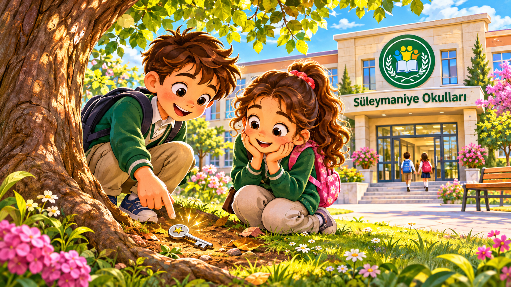
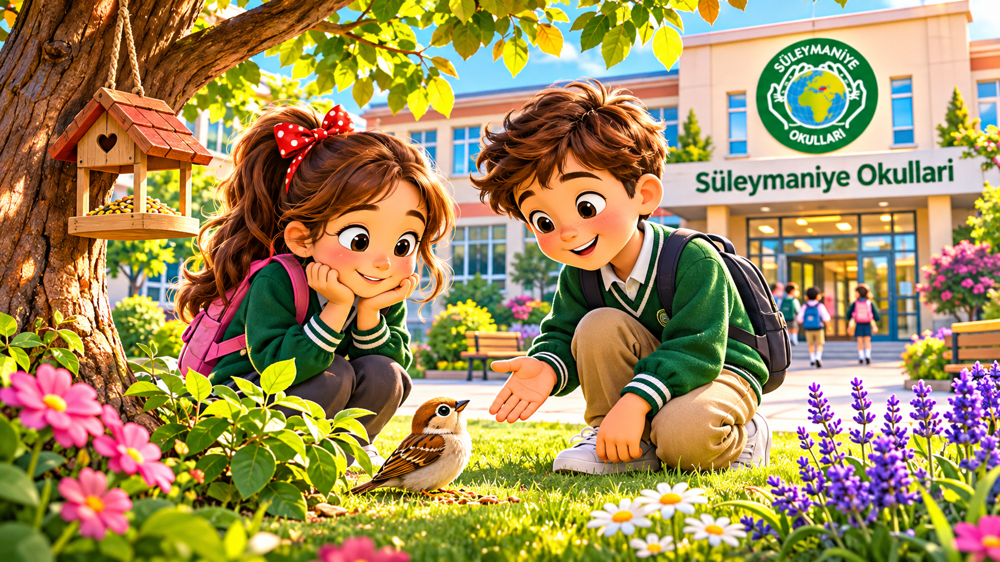

🔑 DÜRÜSTLÜK · SORUMLULUK
Kayıp Anahtarın Sırrı
Ali ve Zeynep, okul bahçesinde buldukları anahtarın sahibini arıyor. Dürüstlük ve yardımlaşma dolu bir yolculuk başlıyor.
📖 5 bölüm🧠 8 soru⭐ 30 puana kadar
📖 Hikâyeye BaşlaBir hikâye seç, dikkatle oku veya dinle; ardından sorularla öğrendiklerini göster.

Ali ve Zeynep, okul bahçesinde buldukları anahtarın sahibini arıyor. Dürüstlük ve yardımlaşma dolu bir yolculuk başlıyor.

Zeynep ve Emir, okul bahçesinde yardıma ihtiyacı olan küçük bir serçe buluyor. Doğru yardım etmenin değerini öğreniyorlar.